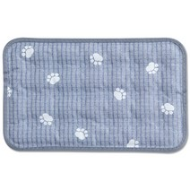
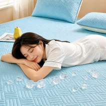
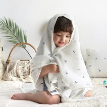
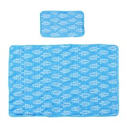
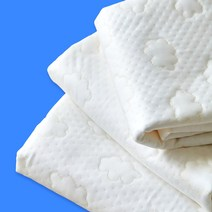

쿨매트 인견 추천 2026 여름 — 성인·유아·반려동물 용도별 5종 완벽 비교
5월 말부터 열대야가 시작되는 요즘, 에어컨 없이 잠들기 힘든 날이 부쩍 늘었습니다. 이럴 때 가장 먼저 챙기게 되는 게 바로 쿨매트나 냉감 침구인데요. 문제는 쿨매트 종류가 너무 많다는 거예요. 성인용, 유아용, 반려동물용 따로 있고, 소재도 인견·라텍스·폴리에스터로 나뉩니다.
이 글에서는 용도별로 딱 맞는 쿨매트 5종을 골라 가격과 소재, 장단점을 한눈에 비교합니다. "나한테 맞는 게 뭔지 모르겠다"는 분들을 위해 선택 가이드도 준비했습니다.
5초 요약 — 용도별 추천
| 용도 | 추천 제품 | 가격 |
|---|---|---|
| 반려동물용 | 신라 요미요미 인견 반려동물 양면 쿨매트 | 8,820원 |
| 성인 침대용 | 아리엘노 천연 라텍스 누빔 냉감패드 | 18,900원 |
| 유아용 | 쁘리엘르 블루베리 풍기인견 유아 쿨매트 | 32,170원 |
| 1인가구 싱글 | 아이티비틀 인견 쿨매트 싱글 + 베개 세트 | 20,700원 |
| 프리미엄 선택 | 국산 고강도 쿨매트 접촉 냉감 침대패드 | 58,050원 |
용도별 상세 추천
1. 반려동물용 — 신라 요미요미 인견 반려동물 양면 쿨매트

강아지나 고양이를 키운다면 반려동물 전용 쿨매트가 따로 있다는 게 큰 차이를 만듭니다. 일반 쿨매트는 발톱에 쉽게 올라가고 충전재가 쏠리는 경우가 많거든요. 이 제품은 양면 인견 누빔 구조로 내구성을 높이고, 뒤집어 쓸 수 있어 세탁 주기를 늘릴 수 있습니다.
가격도 8,820원(정가 9,800원에서 25% 할인)으로 부담 없이 여러 장 장만할 수 있는 수준입니다. 소파 위, 강아지 방석 자리에 깔아두기 딱 좋아요. 세탁기 세탁이 가능해 위생 관리도 편합니다.
쿠팡에서 최저가 확인하기2. 성인 침대용 — 아리엘노 천연 라텍스 누빔 냉감패드

침대 전체에 깔아 쓰는 냉감패드를 찾는다면 라텍스 충전재가 들어간 제품이 가장 무난합니다. 천연 라텍스는 통기성이 좋고 탄력이 있어 등 부분이 침몰되지 않으면서도 시원하게 자고 싶은 분들에게 적합합니다. 아리엘노 제품은 누빔 처리로 충전재가 쏠리지 않고, 양면 사용이 가능합니다.
18,900원(정가 22,900원에서 62% 할인 기준)으로 라텍스 냉감패드 중에서는 가성비 구간에 속합니다. 더블·퀸 사이즈별로 구매할 수 있으니 구매 전 침대 사이즈를 먼저 확인하세요.
쿠팡에서 최저가 확인하기3. 유아용 — 쁘리엘르 블루베리 풍기인견 유아 쿨매트

아기 피부는 성인보다 훨씬 민감하므로 풍기인견 같은 프리미엄 천연 소재가 적합합니다. 풍기인견은 경북 풍기 지역산 인견으로, 일반 인견보다 실 굵기가 균일하고 광택이 자연스럽습니다. 땀을 빠르게 흡수해 아기 등이 눅눅해지는 것을 막아줍니다.
이 제품은 블루 컬러의 아이 방 인테리어와 잘 어울리는 디자인이며, 32,170원(정가 57,460원에서 67% 할인)으로 풍기인견 제품 중 파격적인 가격입니다. 아이 낮잠 자리나 소파 놀이 공간에 깔아두면 좋습니다.
쿠팡에서 최저가 확인하기4. 1인가구 싱글용 — 아이티비틀 인견 쿨매트 싱글 + 베개 세트

1인가구라면 쿨매트 하나만 사는 것보다 베개 세트로 구성된 제품을 사는 편이 훨씬 효율적입니다. 베개도 여름에 땀이 많이 차거든요. 이 제품은 싱글 사이즈 쿨매트에 베개 커버가 함께 포함되어, 따로 살 필요가 없습니다.
인견 소재라 흡습·방산 성능이 좋고, BLUE 컬러로 시각적으로도 시원함을 줍니다. 20,700원(정가 32,860원에서 37% 할인)으로 세트 가격 치고는 경쟁력 있는 수준입니다. 원룸 싱글 침대나 바닥 이불 자리에 그대로 깔면 됩니다.
쿠팡에서 최저가 확인하기5. 프리미엄 — 국산 고강도 쿨매트 접촉 냉감 여름 침대패드

예산이 충분하고 품질을 최우선으로 한다면 국산 고강도 원사로 제작된 냉감패드를 추천합니다. 고강도 원사는 일반 인견보다 밀도가 높아 쉽게 늘어나거나 뭉치지 않습니다. 접촉 냉감 가공이 더해져 처음 누웠을 때 즉각적인 시원함을 느낄 수 있습니다.
58,050원(정가 64,500원에서 10% 할인)으로 가격대가 있지만, 2~3년 이상 사용할 수 있는 내구성을 감안하면 합리적인 선택입니다. 국내 생산이라 품질 관리 신뢰도도 높습니다.
쿠팡에서 최저가 확인하기쿨매트 소재 선택 가이드
인견 vs 라텍스 vs 일반 냉감 소재
| 소재 | 냉감 원리 | 장점 | 단점 | 추천 대상 |
|---|---|---|---|---|
| 인견 | 흡습·방산 | 땀 흡수 빠름, 자연스러운 시원함 | 라텍스보다 탄력 낮음 | 취침, 장시간 사용 |
| 풍기인견 | 고품질 흡습·방산 | 실 굵기 균일, 광택 자연스러움 | 가격 높음 | 유아, 피부 민감자 |
| 라텍스 충전 | 접촉 냉감 + 통기 | 탄력, 충전재 쏠림 없음 | 무거움, 세탁 까다로움 | 성인 침대 패드 |
| 폴리 냉감 | 특수 접촉 냉감 가공 | 즉각적 차가움 | 체온 흡수 후 효과 약해짐 | 짧은 낮잠, 소파 |
세탁 방법별 체크포인트
- 인견 단독: 세탁망 + 30℃ 이하 약세탁. 탈수 약하게. 그늘 건조.
- 라텍스 충전재 포함: 손세탁 권장. 탈수 금지. 통풍 잘 되는 그늘에서 완전 건조.
- 양면 누빔: 세탁기 가능하지만 빨래망 필수. 단독 세탁으로 다른 옷 색 오염 방지.
- 공통: 건조기는 소재 수축 위험이 있어 자연건조 원칙.
자주 묻는 질문 (FAQ)
총정리
쿨매트는 단순히 "여름 침구"가 아니라 누가 어디서 쓰느냐에 따라 선택 기준이 완전히 달라집니다. 아기에게는 피부 자극 없는 풍기인견, 반려동물에게는 내구성 있는 양면 누빔 인견, 혼자 사는 1인가구라면 세트 구성의 실속형, 성인 침대에는 라텍스 냉감패드가 각자의 자리에서 제 역할을 합니다.
올여름도 열대야가 예고되는 만큼, 지금 미리 장만해 두는 게 가장 현명한 선택입니다. 여름 성수기가 되면 재고 소진과 가격 상승이 동시에 일어나거든요. 위에서 소개한 5종 모두 현재 할인 중이니, 필요한 분 먼저 체크해 보세요.